Program the Timex Sinclair 2068, in your browser.
One editor, three languages (Leap V2 BASIC, Leap-Forth and Leap-C), a real TS2068 emulator and a debugger. Write, press Run, watch it run on the machine. Save a tape or a cartridge for the real thing.
Nothing to install: it runs entirely in your browser, and your program is saved there as you type. Looking to build action games with sprites, tiles and music? That is Leap Arcade.
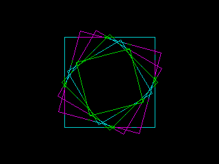
Getting started
From nothing to a running program in a few minutes. Everything happens in the IDE, the page that opens when you press Open the Leap IDE.
Open the IDE and run an example
Open the Leap IDE Open Examples ▾, choose one, and press ▶ Run (F5). The program runs on an emulated TS2068 on the right. Stop it with ■ Stop (F6).
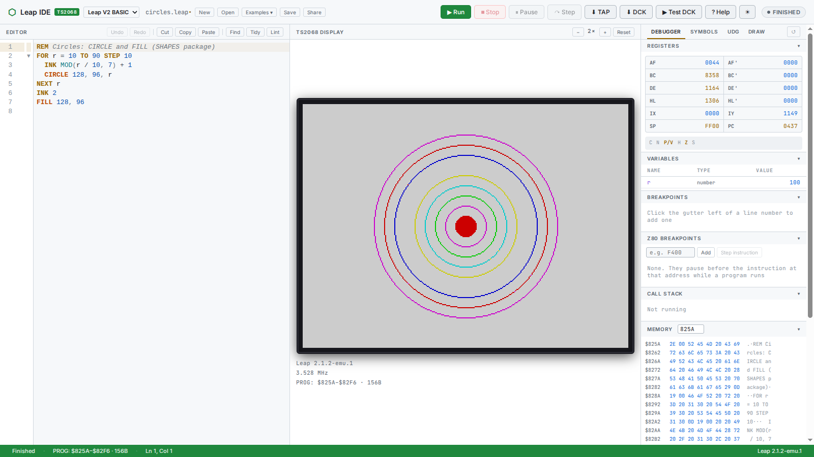
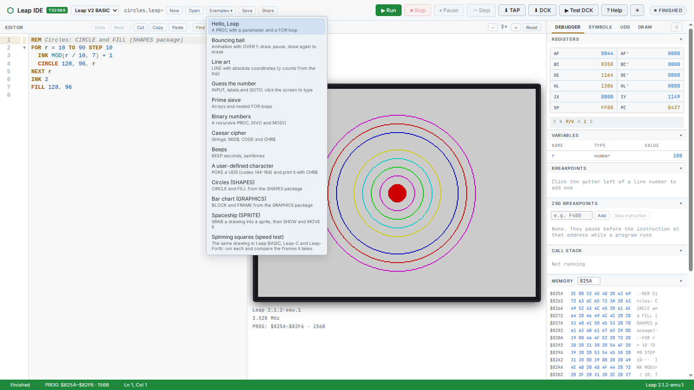
If a program asks for input (INPUT, INKEY$, getkey) click the TS2068 screen first, so it gets your keyboard. Keys work as they are labelled on your keyboard, so a " is a ", with no SYMBOL SHIFT to hunt for.
Pick a language
The language list at the top left switches between the three. Each language keeps its own program, so switching never loses your work.
| Language | What it is | How Run works |
|---|---|---|
| Leap V2 BASIC | a structured BASIC with no line numbers: PROC/ENDP, IF…ENDIF, labels, graphics and sound words | the program text goes to the ROM, which compiles it and runs it |
| Leap-Forth | a Forth with a live OK prompt, graphics and sprites | Run sends your text to the running Forth line by line, as if typed; words you define stay defined until Reset |
| Leap-C | a small C compiler that runs on the TS2068 itself | the ROM compiles and runs it, and prints EXIT n at the bottom of the screen |
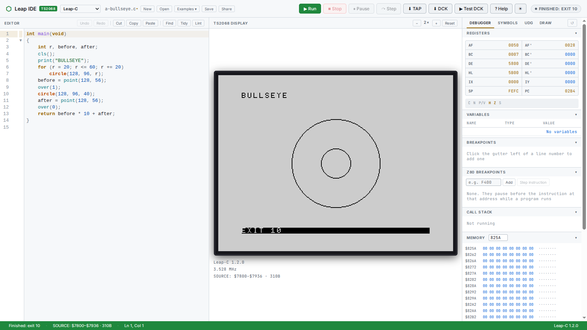
EXIT 10 is at the bottom of the screen.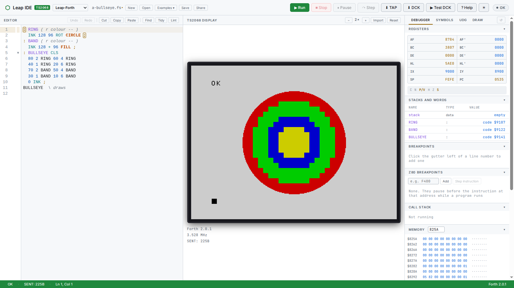
OK prompt stays live. The debugger shows the stacks and your words.Write your first program
Choose New, pick Leap V2 BASIC and type this. It is the manual's own hello world:
REM Leap V2 - hello world
CLS
CALL greet(3)
END
PROC greet(n):
FOR i = 1 TO n
AT 8 + i, 6
PRINT "HELLO, LEAP V2! "; i
NEXT i
ENDPThe same idea in the other two languages. Leap-C:
int main(void)
{
int r;
cls();
print("BULLSEYE");
for (r = 20; r <= 60; r += 20)
circle(128, 96, r);
return 0;
}Leap-Forth:
: RING ( r colour -- )
INK 128 96 ROT CIRCLE ;
: BULLSEYE CLS
80 2 RING 60 4 RING 40 1 RING ;
BULLSEYE| Leap V2 BASIC in a nutshell | |
|---|---|
| No line numbers | just lines. name: on its own line is a label for GOTO. |
| Assignment | x = 1, with no LET. Numbers are 16-bit integers or floats, strings are up to 31 characters. |
| Procedures | PROC name(p): … ENDP, called with CALL name(expr). Recursion works. There is no GOSUB. |
| Blocks | IF … ELSE … ENDIF, FOR … NEXT. |
| Screen | 256 × 192, y from the top: PLOT x, y, LINE x0, y0 TO x1, y1. AT row, col and TAB col are statements of their own. |
| Functions | always with brackets, even with no argument: INKEY$(), PI(). |
Press F1 for every word of the language, with its forms and an example.
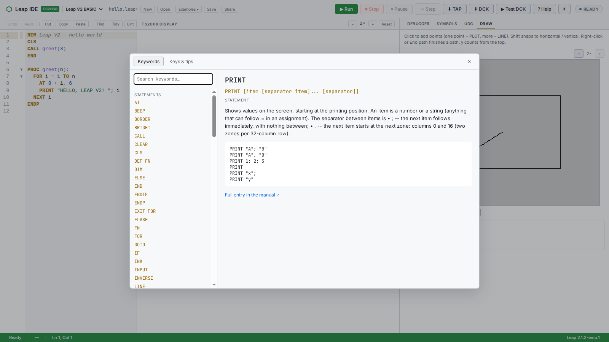
The editor helps as you type
- Errors appear as you type. About half a second after you stop, the IDE asks the language's own compiler to check the program, so the message is exactly what Run would report, and the line is underlined.
- Keywords become upper case as you finish them (
printbecomesPRINTin BASIC). Strings and comments are left alone. - Completion (Ctrl+Space) lists keywords, your own procedures and variables, with a hint of how each is used. Hover a word for its help.
- Structure tools: folding of blocks, automatic indent, Tidy (Shift+Alt+F) to re-indent the whole program, matching block keywords highlighted, F12 (or Ctrl+click) to jump to a definition, F2 to rename a name everywhere.
- Find and replace with Ctrl+F and Ctrl+H; Undo, Redo, Cut, Copy and Paste buttons in the editor header.
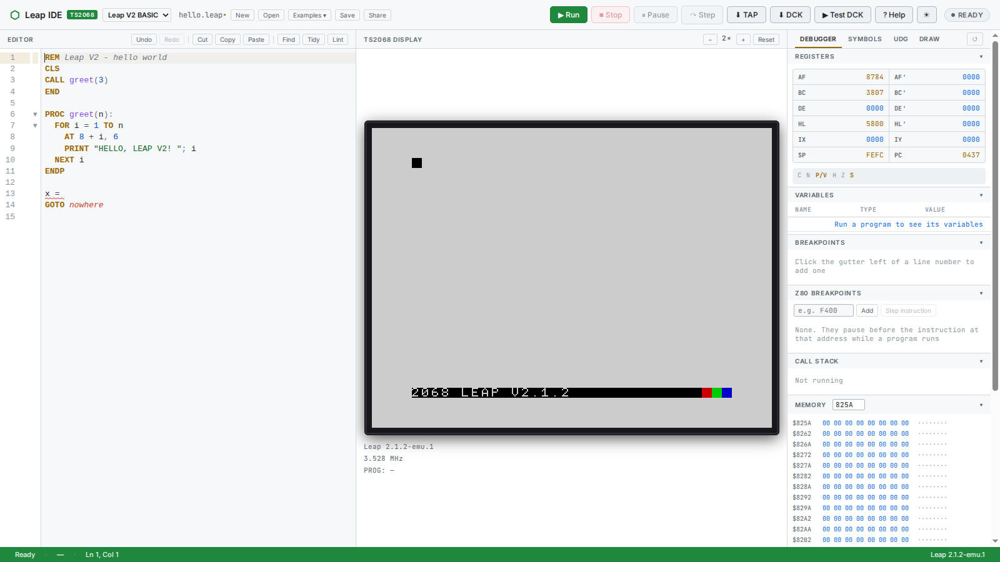
Debug it
Click left of a line number to set a breakpoint. Run, and the program stops there. You can see the registers, the program's variables with their values, the call stack and the memory. ↷ Step (F10) runs one statement. ⏸ Pause (F8) stops a running program anywhere, and Continue carries on. For machine-code level work, add a Z80 breakpoint at an address.
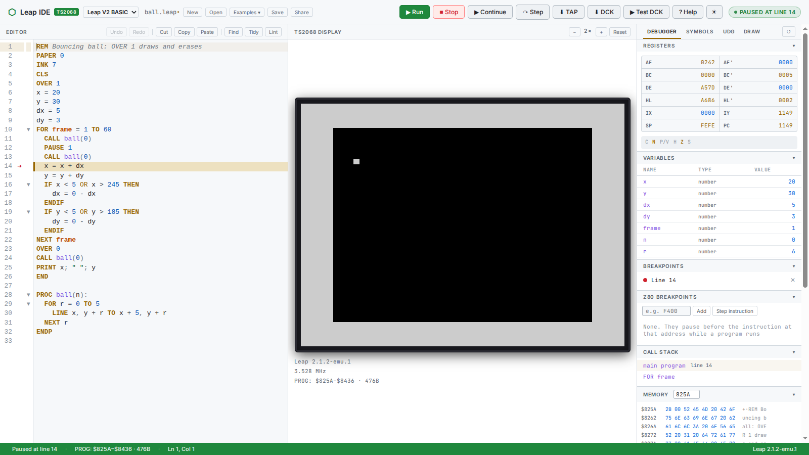
x, y, dx, dy and frame are listed with their values, and the call stack shows where the program is.The Symbols, UDG and Draw tabs
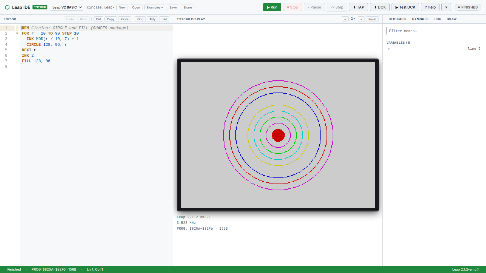
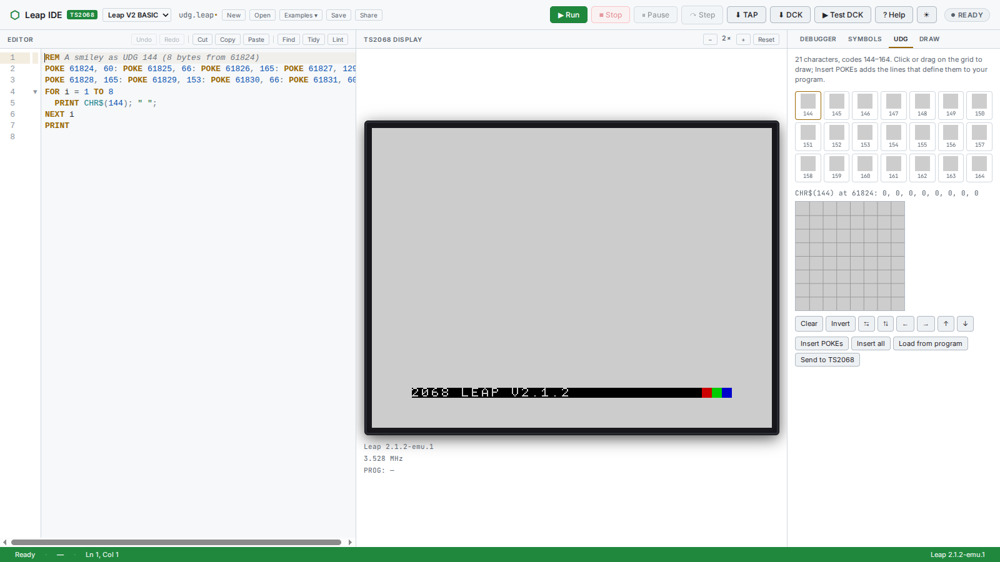
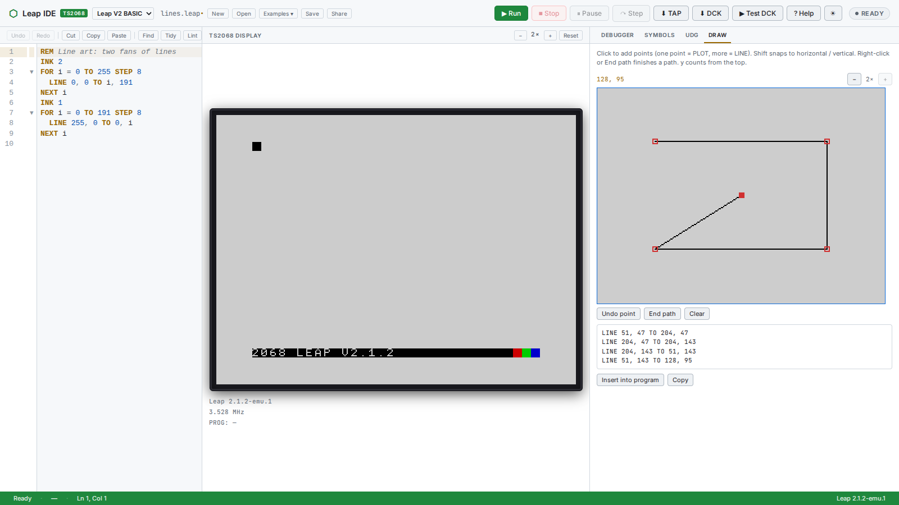
PLOT and LINE statements (or the C or Forth equivalent) for you.Save, share and export
- Your work is saved automatically in the browser, one program per language, so a reload loses nothing. New, Open and Save work with files on your computer: Save downloads a text file, and Open takes text files, tapes (
.tap) and cartridges (.dck). - Share copies a link that opens your program in the IDE. The program is in the link itself (nothing is uploaded anywhere).
- ⬇ TAP saves a tape the TS2068 can
LOAD. On the machine, typeLOAD "name"and thenRUN(Forth:LOAD-TEXT NAME). - ⬇ DCK saves a cartridge that runs on a stock TS2068 with a cartridge dock, with your program built in. ▶ Test DCK runs that same cartridge here in the emulator first, on the stock ROMs, without downloading anything.
One program, three languages
The Spinning squares example exists in all three languages and draws exactly the same picture: 18 frames of 12 nested squares turning. Each program times itself with the machine's frame counter and prints the result.
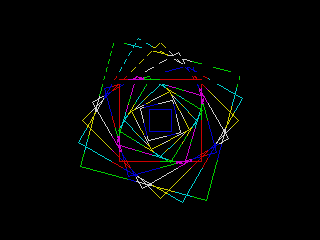
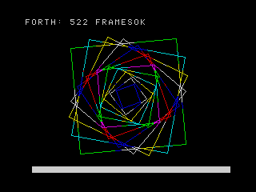
Frames the TS2068 took for the same animation: fewer is faster. Measured in the TSRun emulator, not on real hardware. Compiled Leap-C is the fastest of the three here.
Examples to run
Press Run it to open one in the IDE, already running. Then change it.
Spinning squares: Leap BASIC
The speed test, in BASIC: 12 nested squares turning, 18 frames.
Spinning squares: Leap-C
The same picture in Leap-C, compiled on the TS2068 itself.
Spinning squares: Leap-Forth
The same again in Forth. It counts the frames it took and prints them.
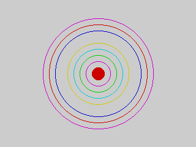
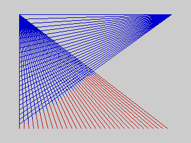
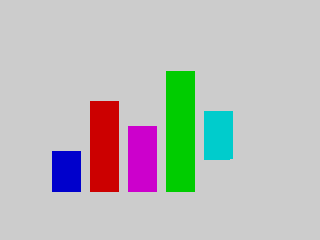
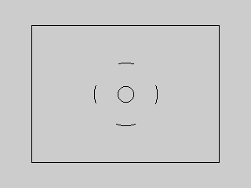
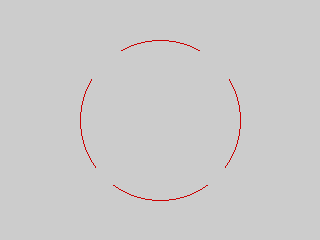
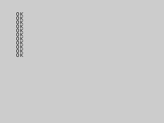
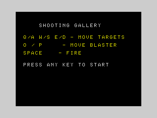
Shooting Gallery
A game in Forth: move the blaster and shoot the targets.
Documentation
The guide above is the place to begin. The rest is reference.
Credits and thanks
Leap Arcade stands on other people's work. Thank you.
TSRun, the emulator
Everything you see running in the Studio runs on TSRun, the browser emulator for the Timex Sinclair 2068 written by Josef Jelínek (josef-jelinek): the Z80, the TS2068's video, the AY sound chip, keyboard, joysticks, tape and cartridge dock. The Leap projects use a fork that adds the Leap ROMs, a few small fixes and a Kempston mouse; the emulator itself is Josef's work. Thank you, Josef: without TSRun there would be no way to run any of this in a web page.
The Timex Sinclair 2068
The computer itself: the TS2068 by Timex Computer Corporation, descended from the Sinclair ZX Spectrum by Sir Clive Sinclair and Sinclair Research. Its stock ROM is used by the cartridge test (the TS2068 ROM files are, as TSRun's notes say, partly released by Amstrad for non-commercial use and partly abandonware). The hardware notes the runtime relies on cite the TS2068 Technical Reference Manual. Timex, Sinclair and ZX Spectrum are trademarks of their owners; this project is not affiliated with them.
The Leap family
Leap Arcade, the Leap IDE and the Leap ROM languages (Leap V2 BASIC, Leap-Forth and Leap-C) are the work of nchiker (the project owner), who designed them, directed their development and approved the games. The ROMs are released under the MIT licence from their own repositories.
Built with Claude Code
Much of the code, the documentation, the example games and their art and music were written with Claude Code (Claude, by Anthropic) working under nchiker's direction, with nchiker reviewing, choosing and approving the results. Commits made that way say so in their messages.
The example games
All the example games are original works: their code, names, characters, art, sound effects and songs were made for this project. Several are in long-established genres (bat-and-ball, falling blocks, a vertical shooter, a platformer, a single-screen arena game, a maze chase, a ray-cast maze, wireframe space flight); they borrow the genre and the kind of mechanics, nothing else. Breakout, Blockfall and the rest are the names of genres of game that countless programmers have written; thanks to everyone who made those games worth imitating.
Tools it is built and tested with
CodeMirror 6 by Marijn Haverbeke and contributors is the code editor (loaded from jsDelivr, MIT licence). SjASMPlus assembles the Z80 runtime (a descendant of SjASM by Sjoerd Mastijn). The games and the runtime were cross-checked in two other TS2068 / Spectrum emulators, ZEsarUX by César Hernández Baño (whose TS2068 source was also a hardware reference) and Fuse, the Free Unix Spectrum Emulator, by Philip Kendall and its contributors. GitHub Pages hosts this site.
Full list: CREDITS.md.
Want to make games?
Leap Arcade is a game-building language with sprite, tile and music editors, and a Studio to match.